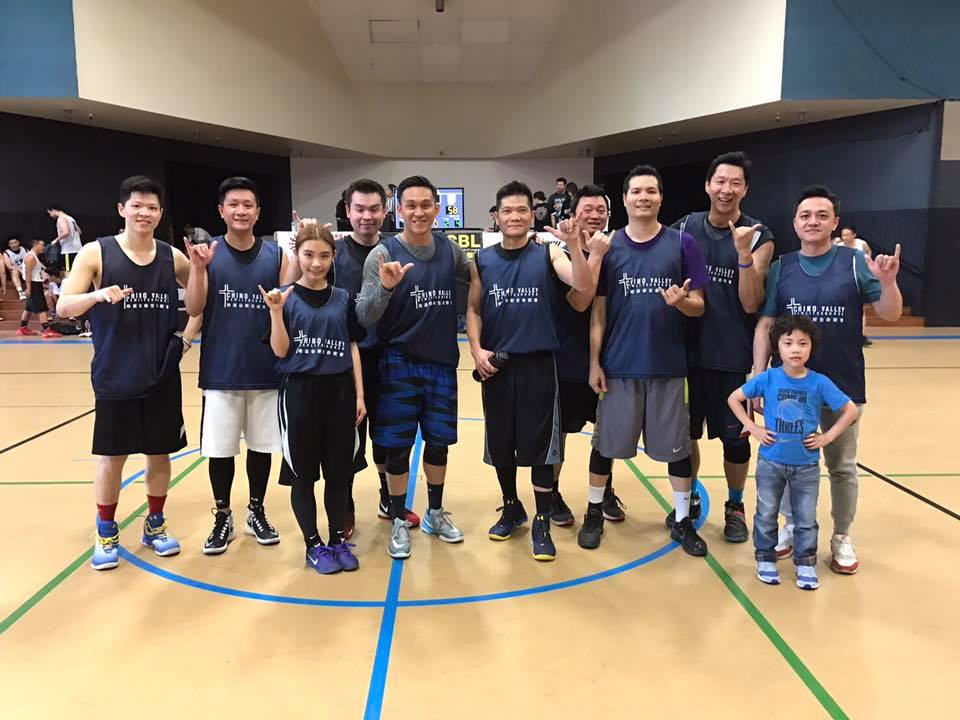
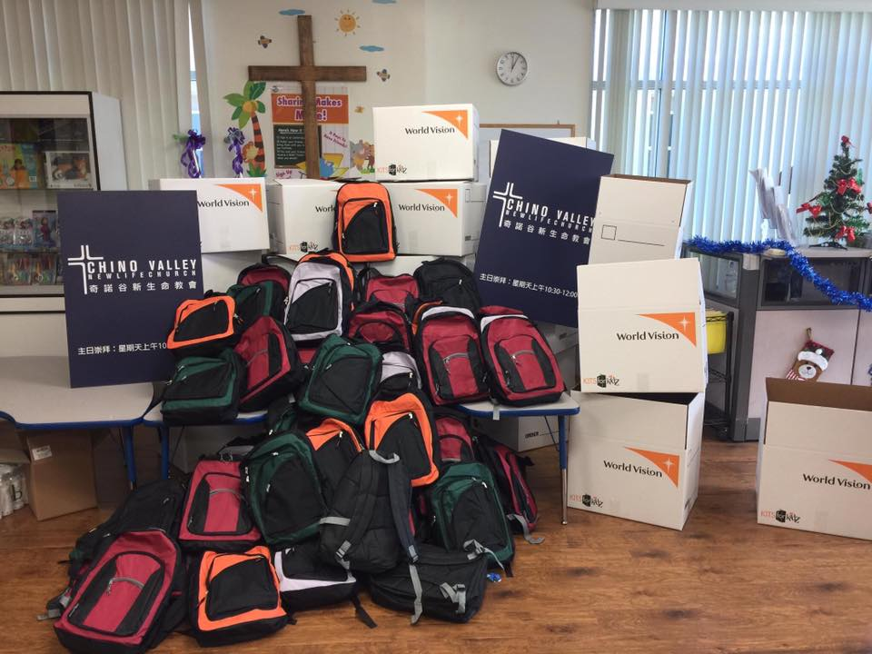
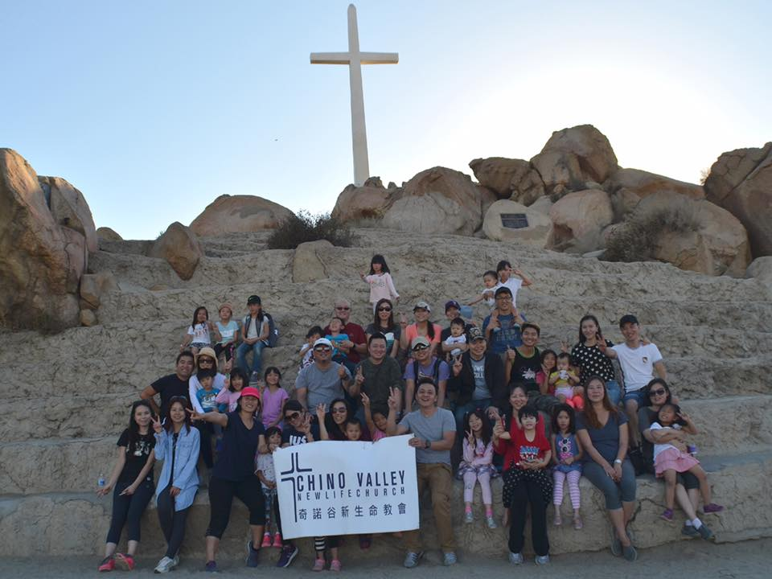
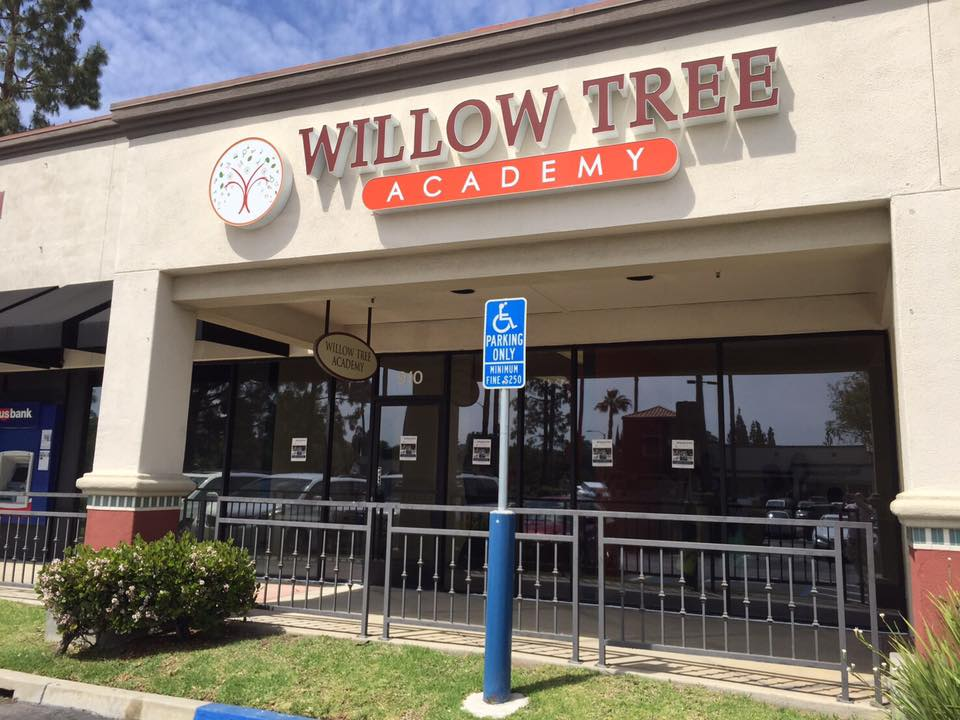
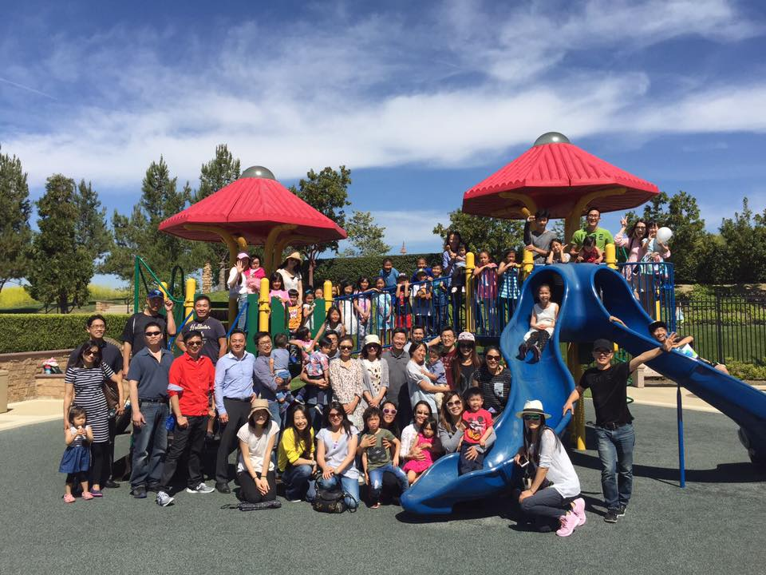

奇諾谷新生命
「奇諾谷」(Chino Valley)位於美國洛杉磯的東邊，範圍包括「奇諾崗」(Chino Hills)及「奇諾」(Chino)兩個城市。
歡迎您的到訪！
「奇諾谷新生命教會」是一個全新的教會，於 2016 年 3 月 20 日開始第一次的主日崇拜。 竭誠歡迎您的參與，您在我們中間就是這個新教會成長的一部分，也是 神國度的擴張。讓我們在神的家裡一起學習，彼此相愛，願 神的榮耀大大地充滿在祂的教會中。
成立緣起
近幾年由於來自中國的移民，華人人口快速成長，蔡維恆牧師受感於 神的呼召，面對華人的需要，委身於奇諾谷成立教會，向華人傳福音，造就信徒靈命。
信念
我們相信基督所賜的新生命是人生中最美好的禮物，是面對各種環境挑戰最有力的答案，是人生蒙福的開始。
教會異象 願祂的國降臨，願祂的旨意行在地上如同行在天上
身為神的僕人，我們的目標是使這個世界更美麗，更和睦，更連結。
我們相信一 個沒有愛的人是沒有辦法把愛給別人，更不知道如何去愛人。沒有一個人不需要愛，人 人都需要愛。
上帝愛我們甚至將祂的獨身愛子送給我們，因此我們希望能創立一個以{愛}為出發點的教會。在服侍的年日裏，從神領受到許多神的恩典、更學習到凡是必須尋求、順服上帝的旨意，因此秉持個人的異象是在 Chino hills、Chino、Ontario 主要針對 Chino Valley 建立一間以聖經為基礎，榮神益人為目的，結合多元文化，建立一個充滿愛且具指標性的社區教會。
新
成為新造的人
生
注重內在生活
命
活出基督生命
牧師簡介蔡維恒牧師
活動 精彩片段回顧

成立緣起
成立的緣起
練習時間
我們每天都練習，但願我們的球員不只是在球場上，在生活中都能靠主得勝！
比賽
目前已經九連勝，我深深期望這個運動能成為福音流通的管子，從球隊裡面結出聖靈的果子．歡迎對籃球的愛好者加入我們！

世界展望會活動
我們教會參與 World Vison 的 promise pack 活動，爲敘利亞難民孤兒院募到100個救難背包．
教友熱情參與
願上帝的愛跟祝福還有我們的禱告也臨到這些敘利亞難民孤兒的身上

2016 年 10 月舉辦第一次教友郊遊活動．
按牧典禮充滿上帝的榮耀，感謝余牧師的安排、家人的支持、弟兄姊妹們滿滿的祝福

2017-4-16 教會換新場地

2017-4-17 Easter eggs hunt!!
聚會 加入我們
| 星期一 | 星期二 | 星期三 | 星期四 | 星期五 | 星期六 | 星期日 | |
|---|---|---|---|---|---|---|---|
| 兒童主日學 | 10:30 ~ 11:45 | ||||||
| 主日崇拜 | 10:30 ~ 11:45 | ||||||
| 小組團契 | 20:00 ~ 22:00 | ||||||
| 禱告會 | 20:00 ~ 22:00 |